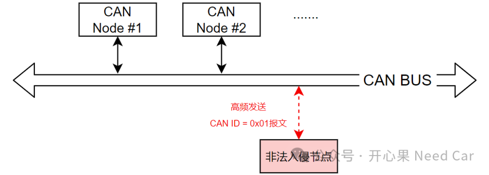
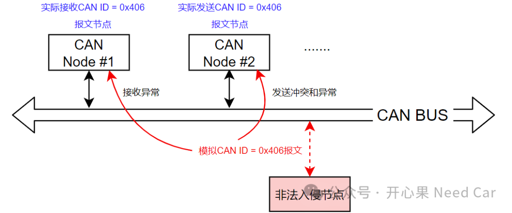
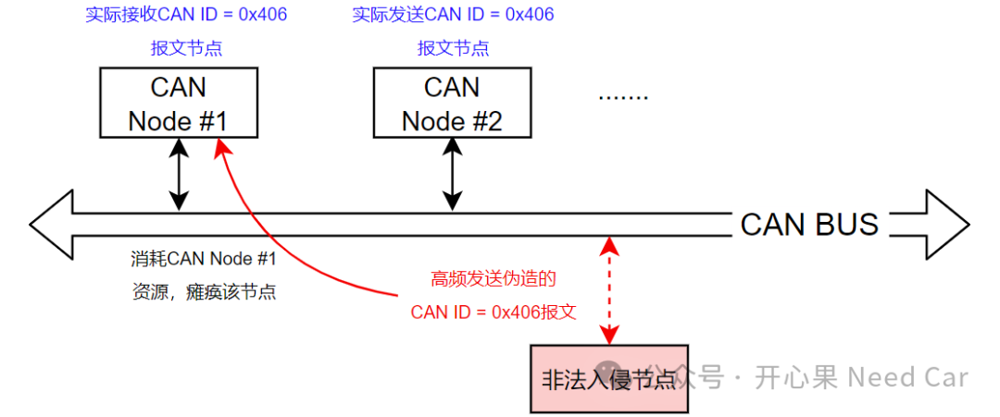
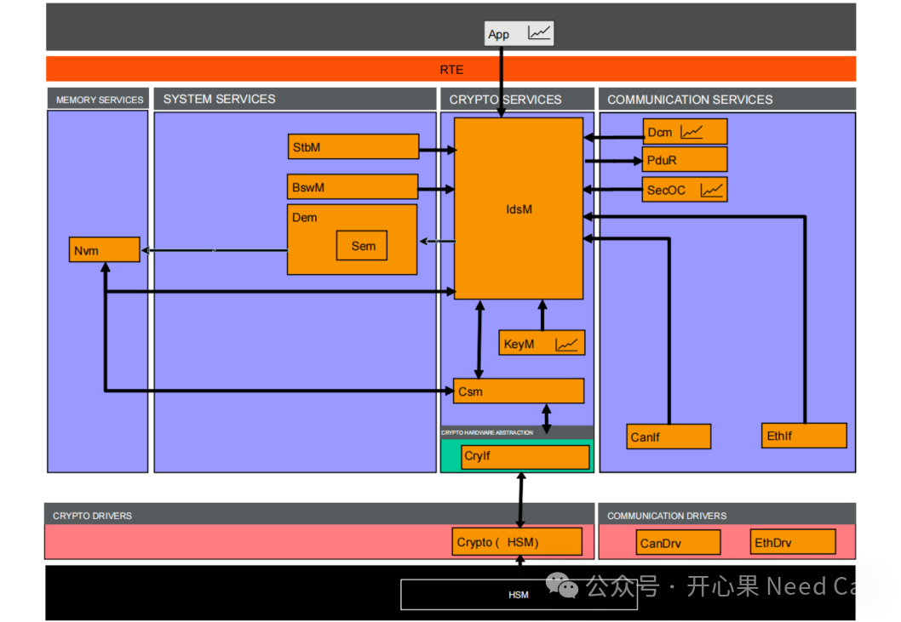

搞信息安全的小伙伴应该注意到了CAN IDS（Intrusion Detection System，入侵检测系统）的需求。其实，这也不算新的概念，在互联网等领域，入侵检测、防御等概念，由来已久。随着汽车智能化、网联化的发展，使得车辆被入侵的可能性越来越大，因此，IDS关注度又被再一次拉回我们的视线。而CAN IDS就是对IDS的一个限定，即：CAN总线的入侵检测系统。针对CAN总线的攻击，攻击手段多种多样：CAN报文窃取、CAN报文注入、CAN报文欺骗，通过劫持某个控制器进行报文重放、报文篡改、报文删除等攻击手段，制造信息安全问题。本文，聊一聊CAN可能被入侵的几种场景，聊一聊CAN IDS将会发挥的作用。我们知道，任意一个CAN Node加入CAN网段以后，即可侦听CAN总线上的数据，当然，也可以发送任意CAN报文。所以，如果要制造CAN总线问题，可能有多种场景，本文讨论如下几种场景：
1、模拟一个高优先级CAN ID瘫痪网段（DOS攻击）
比如：某个第三方通过模拟CAN ID = 0x01的报文，以极高的频率发送到CAN总线，由于CAN通信属于广播式通信，通过“线与”机制获取总线使用权，CAN ID=0x01的报文优先级高，可以优先抢占总线使用权，使得同网段的其他CAN节点无法正常收/发报文，进而瘫痪CAN网段，示意如下：

这种对CAN网段的攻击手段，就是典型的DOS攻击（Denial of Service，拒绝服务）。
比如：第三方通过模拟某个已知的CAN ID（eg：0x406）,攻击CAN网络。（1）CAN通信与以太网通信不同，CAN报文没有源IP和目标IP的概念，因此，普通CAN报文无法识别消息的真伪，只要接入CAN总线，监听到对应的CAN ID，即可模拟该CAN ID，进行CAN报文的伪造。比如：修改0x406报文内容，使得的接收和发送节点均不能正常工作，这种攻击手段属于“报文篡改”，示意如下：
即：发送时，由于有两个节点（一个真实节点，一个入侵节点）发送0x406报文，会造成发送冲突以及发送内容的篡改问题；接收时，接收节点可能接收不到有效的数据，进而造成功能异常。
（2）高频发送0x406报文（eg：原有周期100ms，以1ms周期发送），会消耗尽接收节点的内存资源（eg：有限的接收邮箱被全部占用，得不到释放），进而瘫痪接收节点。如果接收采用中断接收，会使得接收节点被高频中断，瘫痪接收节点功能，示意如下：
（3）报文窃取，即：通过接入CAN网段，获取CAN总线数据，获取通信信息，eg：动力信息、电池信息等关键参数。（4）报文重放，将截获的CAN报文信息在任意时间重放到CAN网段中，扰乱正常的CAN通信。注意与DOS攻击的区别，一个侧重截获信息的随意回放，一个侧重高频抢占总线。
（5）报文丢失，比如：劫持某个网关节点，将需要转发的消息丢弃。
既然是攻击CAN 网络，那么，通过何种方式入侵呢？入侵者可能通过这样几种方式：1、物理连接攻击，即：通过OBD - II端口，通过PC或者其他设备攻击CAN网络；CP Autosar在2020年就发布了第一版《Specification of Intrusion Detection System Manager》，针对入侵事件进行了规范性约束。IDSM与其他模块的交互如下所示：

IDSM的本质是探测安全隐患事件，并将信息存储或者发送出来。
点击下方关注，一起聊聊Autosar/嵌入式，如果需要，联系作者进群，给你更专业的解答